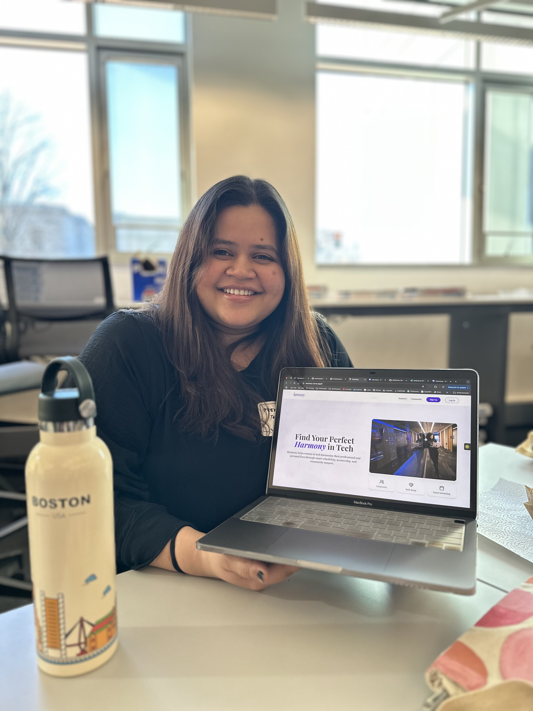

👋 Hi, I'm Preksha Patil!
I'm a passionate Software Engineer with a strong foundation in frontend and full-stack development. Currently, I'm pursuing my Master's in Computer Science at Northeastern University, where I have worked on projects ranging from web and mobile applications to machine learning solutions.
💻 With experience in React, Angular, Node.js, and cloud technologies, I enjoy building scalable and user-friendly applications. My past roles at TCS allowed me to refine my problem-solving skills while working on enterprise-level solutions.
🚀 Beyond academics, I'm always exploring new technologies and working on innovative projects that solve real-world problems.
📩 I'm actively seeking full-time software engineering opportunities where I can contribute my skills and grow as a developer. Feel free to connect with me!
Master of Science in Computer Science
September 2023 – May 2025
Program Design Paradigm, Web Development
Bachelor of Science in Computer Science
August 2016 – April 2020
Web Design, Operating Systems, Data Structures and Algorithms, Database Management Systems, Cloud Computing
Python, Java, JavaScript, TypeScript, Node.js, Vue.js, Java, C#, C, C++, SQLAlchemy, Sequelize
AWS (S3, API Gateway, Lambda), Azure, SQL, PostgreSQL, MySQL, NoSQL
HTML, CSS, PHP, REST API development, React, Angular, JSON, PHP
Git, GitHub, Docker, Linux, JIRA, Visual Studio, Test-Driven Development (TDD)
Tata Consultancy Services
September 2020 - May 2023
Built an image processing application and ensured it can perform various operations.
Key Features:
Developed a research paper search engine using Python that scrapes data from PaperWithCode and Google Scholar. The application allows users to search for academic papers, retrieving the top 10 papers ranked by citation count, facilitating efficient access to high-quality research resources.
Key Features:
Developed a comprehensive multimedia file management system that allows users to upload, access, convert, and merge various file types, including images, audio, and video. This web application enables users to manage their media files efficiently while providing functionalities such as token-based storage management, file conversion, and media merging.
Key Features: